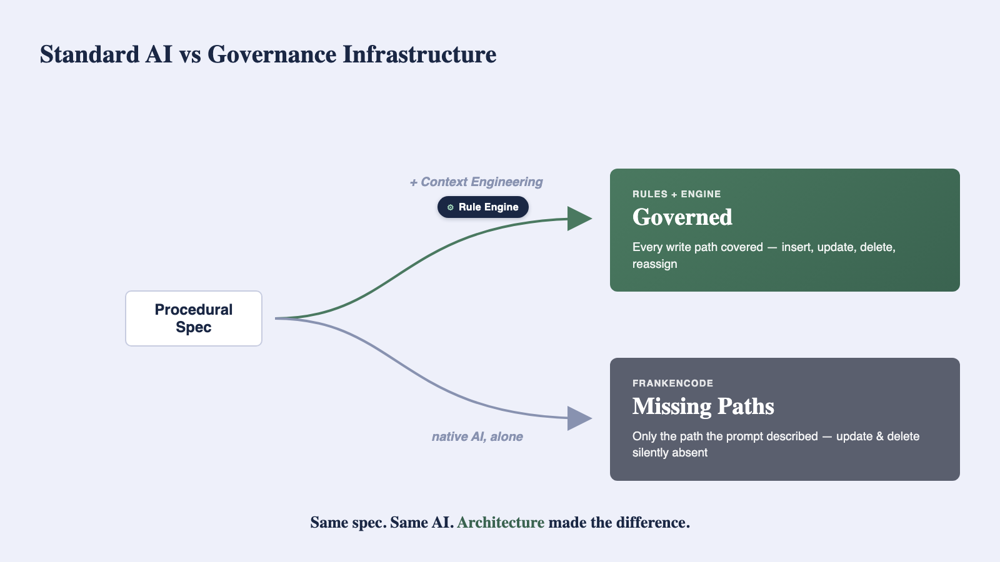
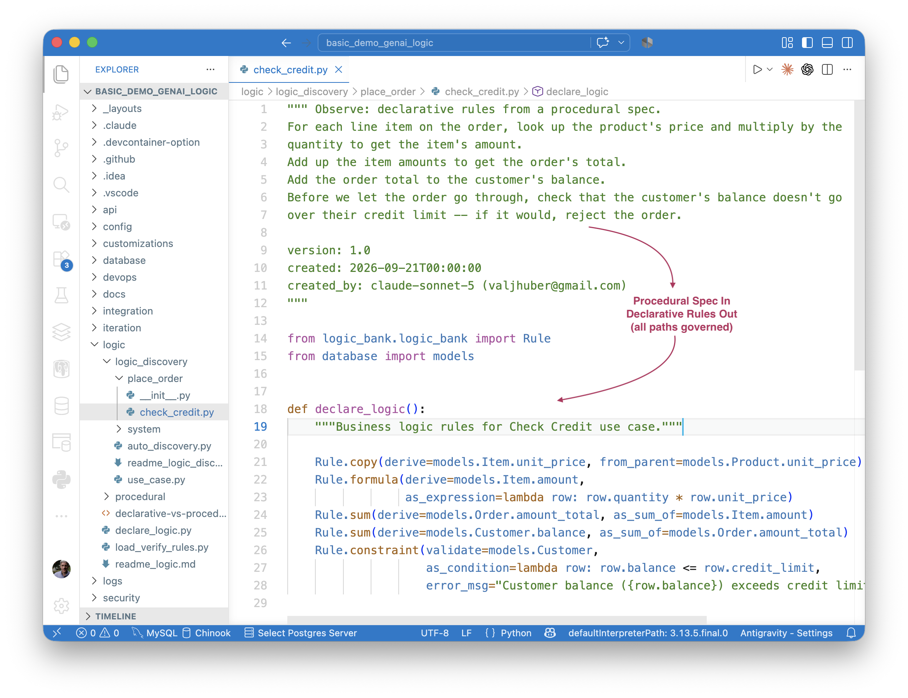
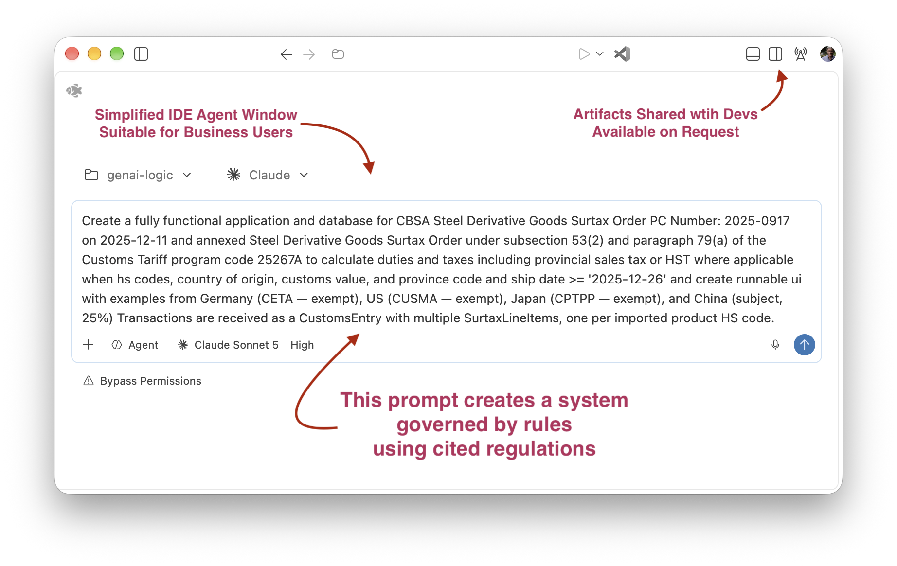
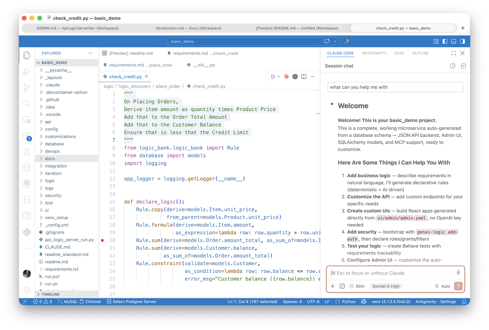
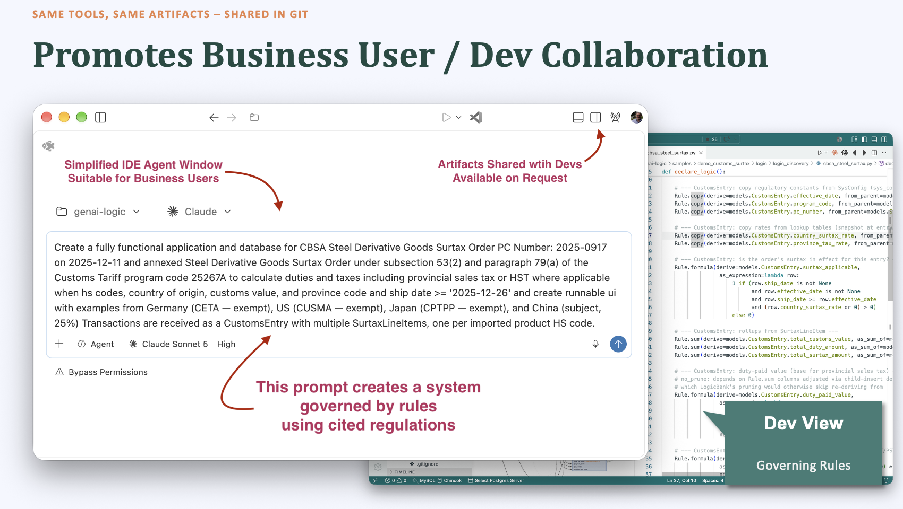

Manager readme
Welcome to GenAI-Logic
GenAI-Logic turns your requirements into enterprise-class database transaction systems, governed by no-bypass rules.
It reads whatever form your requirements are already in — plain English, Gherkin, actual regulation text — or, you can request an interview to discover the requirements.
And it fits what you already use: your methodology, standard tools, and shared artifacts, fostering collaboration between Business Users and Developers.
This is the start page for the GenAI-Logic Manager — where you manage projects, create notes and resources, etc. It's also your learnng hub.
Say "hi" to your coding assistant — click to see important notes on models
Using a lighter or auto-selected model? Fine for exploring — for real logic you intend to keep, pick a frontier model (Claude Sonnet 5, Gemini 3 Pro, GPT-5, etc.) if your plan allows it, and review the AI's output either way, the same as you would any other engineer's.
Why this matters: AI-Enabled Projects.
🚀 First Time Here?
The Ideal — executable business prompts, held to an enterprise standard
Governance — logic that's readable, enforced without bypass, and auditable — isn't a developer nicety; it's a standing CIO concern — AI just took the #1 spot in NASCIO's 2026 survey of state CIOs, after cybersecurity held it for 12 straight years. Watch for it below: the same commit that fails in a moment is that property, live.
Say this to your AI assistant (allow several minutes):
Create basic_demo from samples/dbs/basic_demo.sqlite.
On Placing Orders, Check Credit:
1. The Customer's balance is less than the credit limit
2. The Customer's balance is the sum of the Order amount_total where date_shipped is null
3. The Order's amount_total is the sum of the Item amount
4. The Item amount is the quantity * unit_price
5. The Item unit_price is copied from the Product unit_price
Use case: App Integration
1. Publish the Order to Kafka topic 'order_shipping' when the date_shipped is not None.
Starting from a new database instead?
The prompt above starts from an existing database — the common real-world case, and much faster (no schema design step). You could have AI design a new database from scratch instead:
Say this to your AI assistant (allow several minutes):
See it running: Press F5 using "API Logic Server Run (run project from manager)", and open the Admin App. Explore the API via Swagger, browse the data, and follow the relationships — all auto-generated from the data model.
Now trigger it: open an unshipped Order for Alice, edit the Widget item:
Detail Instructions -- Screen Shots
Alter the quantity for an unshipped item:
- Show the Customer List
- Show the first Customer
- Show first Order
- Edit the Item
- Set the quantity

The save fails — note the dialog. That's 5 rules — not ~200 lines of code — governing this transaction across four tables. Not what you'd get if you'd asked AI alone. Let's explore.
AI Alone Writes Code That's Hard to Read or Trust — Here's the Evidence
AI is genuinely good at UI, data mapping, boilerplate, etc — no argument there. Business logic is the exception.
Left unguided, any AI assistant — including the one that just built basic_demo for you — generates a running system for logic like this. On inspection, we found three problems:
Not readable — you can't govern what you can't read (5 vs ~200 lines)
procedural/credit_service.py — ~200 lines for those same 5 requirements. Open it and judge for yourself.
~200 lines is a demo-scale number — a real system runs 1-2 orders of magnitude more requirements, and proportionally more procedural code to match. That's why business logic ends up as roughly half the total effort on a real system. Nobody can audit that at a glance — not the next developer, not compliance, not you in six months. At that scale, an auditor can't read it all — they can only sample, and hope.
Not trustworthy (1) — good spec generated 2 subtle bugs
Found only by specifically testing what happens when a row is reparented to a new owner: the A/B test. Root cause: path confusion — procedural code must enumerate every change path (insert, update, delete, reparent) by hand, and it's easy to miss one.
There's a structural problem underneath the bugs, too: AI pattern-matches dependencies, it doesn't compute them — so the odds of a miss go up as the system grows. More detail →
Not trustworthy (2) — typical spec omitted entire update and delete paths
The example above presumed an excellent, declarative spec — but specs aren't always so good. We tried it with a typical one: check credit on placing an order, phrased the way a developer naturally writes it. We gave that requirement to two frontier models, with no GenAI-Logic, and told them explicitly not to use rules:
Note: this is a test of native AI coding ability — please do not use ApiLogicServer, GenAI-Logic, LogicBank, or any other code-generation or business-rules/rules-engine framework. Just plain hand-written code (standard web framework + ORM of your choice).
Using basic_demo.sqlite, build a system (api + web app) that lets us enter orders.
Here's what needs to happen when someone places an order:
- For each line item on the order, look up the product's price and multiply by the quantity to get the item's amount.
- Add up the item amounts to get the order's total.
- Add the order total to the customer's balance.
- Before we let the order go through, check that the customer's balance doesn't go over their credit limit — if it would, reject the order.
Both produced the same shape of code: one function, wired to order creation. No update path. No delete path — confirmed in the actual code.
Probed directly: change an item's quantity, delete an item, reassign an order to a different customer, reassign an item to a different product. Every case, both models, left stale data behind. No error. Nothing to catch it. The logic wasn't buggy so much as absent — it existed for exactly one path and nowhere else. Full experiment →
Not maintainable — every regeneration re-exposes you to (1) and (2)
Hand-editing 200 generated lines isn't a real option — nobody reliably patches the output of a code generator, any more than you'd hand-patch a compiler's output. That leaves one path: change the prompt and regenerate.
Regen risks the same bug, every time. The AI re-derives everything from scratch, with no guarantee it reproduces the paths that already worked. Adding one small constraint — a one-line change — means regenerating and re-reviewing the whole system, every time, at every table. On a real system that's not a quick edit. It's hours, real AI cost, and a fresh chance at a new bug — to make a change that should have taken a minute.
That's not (only) a capability gap — it's what happens when dependencies are expressed as procedural code: real opportunities for subtle, hard-to-spot bugs. With rules, those same dependencies are handled deterministically by the rules engine — computed once, checked every time. That's the difference this document shows.
We're deeply impressed with AI — this is about closing the gap it has here: logic. That's next.
Governed Systems You Can Read, Trust, and Maintain — Augment AI with Rules
1. What you just ran — executable models: API, app... and logic
You've probably used AI to generate code before — so what's different here?
Difference 1: it produces executable models, not code. You just ran that project. Instead of a pile of procedural code, you got artifacts that declare structure or policy rather than procedure — same 5 requirements, same AI:
- Data model —
database/models.py - Full JSON:API — Swagger, pagination, optimistic locking (
api/expose_api_models.py— 52 lines, zero per-table code) - Admin App — multi-table, with navigations and lookups (
ui/admin/admin.yaml— simple YAML, not HTML/JS) - Business logic — logic_discovery/place_order/check_credit.py — 5 rules (~40X less), same requirements, same AI, 0 bugs
Difference 2: the logic itself is declarative. 5 lines, intent still clear — not ~200 lines of procedural frankencode. That's what declarative buys — more on that below.
It's plain Python — standard tooling applies. Security is opt-in, not default — bootstrap RBAC anytime with genai-logic add-auth.
The save you just saw fail was enforced by exactly one of those 5 rules.
2. Debug it — standard logging, standard debugger
No new tools required. The rule chain that just fired is in the log — plain text, readable in your terminal or editor: sample trace. A live run writes the same thing to the standard log, logs/als.log.
Every rule is a plain Python function or lambda. Set a breakpoint on any calling= function or as_condition= lambda in your IDE, exactly like you would anywhere else in the codebase — no proprietary debugger, no special UI.

3. Iterate — 1 AI prompt adds table, relationship, 2 rules
Ask your AI assistant for a new rule, in plain English:
There was no Letter table in the model — the AI adds it, relates it to Customer, and declares a count + a constraint. One sentence creates a schema change and two new rules — automatically integrated with the 5 already there. No need to open check_credit.py to find where this belongs, or trace the other rules to check for conflicts.
A lot just happened here — worth a closer look.
4. Governance Architecture — declare and run (Context Engineering, Rules engine)

Two funnels, converging on one engine, at the same commit point:
Design Funnel — how rules get created. Any requirement format — NL, Gherkin, pseudocode, formulas — goes in. Context Engineering is what makes that safe with AI in the loop: it steers the AI toward the right rule type (sum vs. count vs. Allocate vs. Request Pattern) for what you actually asked for, instead of letting it default to the procedural code it's seen a million times in training. That's not a hypothetical risk — see Not trustworthy (2) above for what the same AI produces without it.
Runtime Funnel — how rules get enforced. All transaction sources — APIs, messages, MCP, agents, workflows, and whatever comes next — converge here. Rules aren't called from your code; they're wired into a single SQLAlchemy before_flush listener, loaded once at server start. Every write passes through that one listener before it commits — reused for every path. No bypass — there's no second door.
Why this matters: rules are never called and never need ordering — worth reading
The Iterate example above — like maintenance generally — was remarkably simple, because rules are declarative:
- No need to call the new logic. Rules are invoked automatically - regardless of the originating path. You can trust that they'll always run.
- Order doesn't matter. Open
check_credit.pyand shuffle the five rules into any order you like. Rerun — still correct. Try that with 200 lines of procedural code. You can trust that they'll run in the right order. - You got more than you asked for. The original requirement said "On Placing Orders, Check Credit" — insert time. But the save that failed was an edit to an existing order. Nobody wrote an update-time check.
Functions don't behave like that. So why is that? Traditional logic is procedural — you own how: when it's called, and in what order. Declarative logic — rules — is about what, not how: you state the fact, and the system takes responsibility for invocation and ordering.
| Property | Why it matters |
|---|---|
| Auto-reused | Declared once, enforced over every change path — no per-path handlers to write or miss |
| Auto-invoked | Fires at every commit, from every caller — can't be forgotten, can't be bypassed |
| Auto-ordered | The engine computes dependency order — add a rule anywhere, it finds its place |
Rule.sum(derive=Customer.balance, as_sum_of=Order.amount_total, where=lambda row: row.date_shipped is None) looks like a function call — it isn't one. Grep this codebase for check_credit( — you won't find a call site. Nothing calls it. It runs because it's declared, not because something invokes it.
This is bigger than 40x less code. With procedural code, seeing a function isn't enough — you still have to trace every call site to know whether it actually runs for the path you care about. With a rule, seeing it is the proof: Auto-invoked guarantees it fires everywhere, so reading the rule tells you it runs — without the path analysis you'd otherwise have to do yourself.
If it helps: think of a spreadsheet — B10 = SUM(B1:B9) isn't called, it reacts. Rules react the same way to changes in what they depend on.
Full writeup: declarative/procedural comparison.
Some call this "governance by architecture, not discipline" — what that means
Discipline means every developer, on every change, has to remember the right pattern and every edge case — the burden lives in people, and it slips.
Architecture means the software does it automatically — it's just how the system works, the same way a commit handler always runs. Nobody has to remember, because there's nothing to remember.
Full case: Governance by Architecture, Not Discipline.
Pre-Built Enterprise Architecture — API, EAI, MCP, Rules, RBAC, Vibe UIs (via Context Engineering)
Beyond API and Logic — EAI, MCP, AI Rules, RBAC, Custom UIs
You've seen the API work, and you now know how the logic behind it holds up — declarative,
auto-enforced, governable. Fair question: how does it integrate with your other enterprise
infrastructure — Kafka messages, B2B partners, AI agents, role-based access, custom UIs? The
same Context Engineering that knows how to generate rules (not code) also knows key enterprise
patterns. More on system vs. domain knowledge →
↳ Enterprise Integration (EAI) — B2B partner orders via Custom API or Kafka
The demo above showed Publish the Order to Kafka topic. For the subscribe* side, see samples/basic_demo_eai/readme.md: B2B orders from partner systems, via a Custom API or Kafka subscriber, including lookups* so partners send "Account": "Alice" (not internal IDs). One project handles both directions — no separate system to stand up:

Below is the portion of the requirement for subscribing:
Feature: Kafka Subscribe Order Integration - Inbound orders from sales channel
Scenario: Accept inbound orders from sales channel
Given an inbound order message in JSON format (message_formats/order_b2b.json)
When the message is received from Kafka topic order_b2b
Then map Account to Customer by name
And map Items.Name to Product by name
And map Items.QuantityOrdered to Item.quantity
Notice that you can define complex message/API formats by example — drop a sample JSON file next to the requirement and reference it, instead of writing out a schema. For more, see samples/requirements/Order-EAI/message_formats.
Also notice what that requirement does not say. Enterprise-grade reliability —
a 2-message save that never loses data mid-parse, a queryable error_text reason
on every failure instead of a buried log line, and the same Check Credit rule
enforced no matter which path wrote the row — comes with every Kafka subscriber
this platform generates. You don't ask for it.
↳ MCP (Model Context Protocol) — your API is agent-discoverable out of the box
Your API is MCP-discoverable out of the box (/.well-known/mcp.json). Copilot, Claude, or ChatGPT can find the schema and answer natural-language queries against it. There's no discovery layer for you to write — see samples/basic_demo_ai_rules-supplier/readme_ai_mcp.md

Here, an end user makes a NL request to find some data, and send email — the same governing rules enforce it, whether the request came from MCP, the API, or a form. No new door, no new bypass.
You can also use MCP in your IDE to issue queries in natural language.
↳ AI Rules — governed judgment calls inside deterministic logic
Rules that call AI for genuinely judgment-call decisions (e.g. picking a supplier under disrupted shipping lanes). Such AI "proposals" are governed by the deterministic rules to ensure results conform to business policy, with a full audit trail of every AI request and response — see samples/basic_demo_ai_rules-supplier/readme.md

The rule below is one line (__Use AI__ to Set...) inside an otherwise ordinary logic declaration — deterministic and AI rules aren't two systems, they're the same DSL:
On Placing Orders, Check Credit:
1. The Customer's balance is less than the credit limit
2. The Customer's balance is the sum of the Order amount_total where date_shipped is null
3. The Order's amount_total is the sum of the Item amount
4. The Item amount is the quantity * unit_price
5. The Product count suppliers is the sum of the Product Suppliers
6. __Use AI__ to Set Item field unit_price by finding the optimal Product Supplier based on cost, lead time, and world conditions
↳ Vibe Custom UIs — keep your vibe tool, point it at a governed backend
The API and business logic are already built and governed — that's the part that's hard to get right, and now you don't hand-write it. What's left is the UI, and that's exactly what vibe tools (Cursor, v0, etc.) are great at.
Point yours at the generated API, and it renders against real, governed data — the same logic runs no matter what's calling it. One database, one API, any number of custom front ends: dashboards, tree views, maps, card layouts — all shown below, same backend, all generated in about 15 minutes with no hand-written JavaScript.

The card layout above, worked first try:
Add an option on the Employee List page to show results as cards, and
show the employee image in the card.
More prompts (tree view, map, landing page) and what each produced: Admin-Vibe-Sample.
Quick-start a React app from your (possibly customized) admin app:
↳ RBAC (Role Based Access Control) — row-level security, declared not coded
Declare row level security using technologies like Keycloak — and declare it the same
way you declare logic: describe it, AI writes declare_security.py. Same project as
above:
turns into:
DefaultRolePermission(to_role=Roles.sales, can_read=True, can_insert=False, can_update=False, can_delete=False)
Grant(on_entity=models.Customer, to_role=Roles.sales,
filter=lambda: models.Customer.credit_limit >= 3000, filter_debug="credit_limit >= 3000")
Grant(on_entity=models.Customer, to_role=Roles.sales,
filter=lambda: models.Customer.balance > 0, filter_debug="balance > 0")
# two Grants for the same role are OR'd — either condition qualifies
No SQL, no per-endpoint checks to remember — the filter applies automatically everywhere that role touches Customer: the API, the Admin App, MCP queries. See samples/basic_demo_eai/security/readme_security.md for more NL → declaration examples.
Governed Enterprise Sample Systems, from Prompts — Executable Requirements
Put that enterprise awareness to work, and here's what it builds. Unburdened from logic, AI is free to do what it's great at — reading any requirement format and translating intent, while rules turn that intent into real, governed systems. For example, these three: built from a plain prompt, actual regulation text, and Gherkin, by different teams writing the way they already write — not a new syntax to learn, and all three came out the same way: generated as governed rules, no bypass. Click to see the prompt and the rules it produced:
↳ Budget allocation — complex cascading cost allocation, two levels deep
The prompt (↗) that built it:
Departments own a series of General Ledger Accounts.
Departments also own Department Charge Definitions — each defines what percent
of an allocated cost flows to each of the Department's GL Accounts.
An active Department Charge Definition must cover exactly 100% (derived:
total_percent = sum of lines; is_active = 1 when total_percent == 100).
Project Funding Definitions define which Departments fund a designated percent
of a Project's costs, and which Department Charge Definition each Department
applies. An active Project Funding Definition must cover exactly 100% (derived:
total_percent = sum of lines; is_active = 1 when total_percent == 100).
Projects are assigned to a Project Funding Definition.
When a Charge is received against a Project, cascade-allocate it in two levels:
Level 1 — allocate the Charge amount to each Department per their
Project Funding Line percent → creates ChargeDeptAllocation rows
Level 2 — allocate each ChargeDeptAllocation amount to that Department's
GL Accounts per their Charge Definition line percents
→ creates ChargeGlAllocation rows
Constraint: a Charge may only be posted if the Project's
Project Funding Definition is active.
And the rules it produced:

The key takeaway: this is complex business logic — far beyond the illustrative demo.
Trust: read the resultant rules (↗) — they'll monitor every transaction.
Verify: AI read those same rules and wrote a Behave test suite (↗) from them — no test written by hand. Running it produces an automated Logic Report (↗) — 7 scenarios, 37 steps, all passing, with the rule chain's execution trace on every scenario. Not a hand-written report — regenerate it any time the rules change, and it's still true.
↳ Canadian CBSA duty calculation — rules distilled straight from the regulation text
Use actual regulations — this prompt (↗) reads regulations straight off the web:
Create a fully functional application and database
for CBSA Steel Derivative Goods Surtax Order PC Number: 2025-0917
on 2025-12-11 and annexed Steel Derivative Goods Surtax Order
under subsection 53(2) and paragraph 79(a) of the
Customs Tariff program code 25267A to calculate duties and taxes
including provincial sales tax or HST where applicable when
hs codes, country of origin, customs value, and province code and ship date >= '2025-12-26'
and create runnable ui with examples from Germany (CETA — exempt), US (CUSMA — exempt), Japan (CPTPP — exempt), and China (subject, 25%)
Transactions are received as a CustomsEntry with multiple
SurtaxLineItems, one per imported product HS code.
Producing these rules:

Read the rules (↗) yourself.
Proactive Human-in-the-loop: the ad-libs report (↗) lists every low-confidence decision — so you know exactly where it guessed.
↳ Low Value Import Shipments (CLVS) — screens dangerous goods, using internationally agreed rules
Business description (↗) and actual requirements (↗), expressed in Gherkin format, producing these rules:

Complex incoming messages need only sample XML examples (↗).
Rules make it auditable — logistics firm participation is subject to audit. Failure would mean hiring 100+ additional staff, an 8-figure exposure. Auditors can read the rules ↗, and trust they will be enforced - not sample and hope. (Full writeup →)
Governance reports — logic flow, AI alerts, health check
Rules you can read is only half of it — the AI is also proactive about what it wants you to double-check. Three reports, generated from the running system, not hand-written:
- Logic flow diagram — NL requirement, dependency diagram, and rule summary, for every rule chain
- AI alerts — every assumption the AI made beyond the spec, flagged for you to verify, not buried
- Health check — rule adoption, dependency-tracking integrity, missing docstrings, across the whole project
A compliance reviewer can check the implementation in minutes, not by reading code. Here's that report for the basic_demo rules you just ran — the same report generates for any project, including the enterprise-scale ones below:

Scales Past One Project — Any Requirement Format Produces Governed Rules
That's the point. A hand-coded system needs a correct handler for every path on every table — the discipline has to live in each team. Here, the pipeline supplies the paths. The second project doesn't depend on the first team's care, or on anyone learning a new methodology first.
Give us whatever, you get rules — even the hardest case. A head-to-head test fed the same naturally procedural spec to native AI and to this pipeline. Native AI built the insert path and silently dropped update and delete. The pipeline produced 5 governed rules covering every path. Same input, same AI — the difference was the architecture.

The GenAI-Logic side of that test, in full: samples/basic_demo_genai_logic — the procedurally-phrased prompt, the 5 rules it produced, and confirmation all 9 change paths are governed, not just the one the prompt described.

The native-AI side, in full: samples/bd_claude_native_ai — the actual code, the prompt, and the unedited transcript.
Business Users Empowered — a Friendly IDE, Guided by AI (via Context Engineering)
A Business-User-Friendly IDE — same AI, same governed output, no developer tooling to learn

No Proprietary Interface, No Rigid Structure — just ask the AI when you need guidance
Traditional studios lock you into proprietary, rigid interfaces. Here, AI isn't boxed into a fixed structure — and when you need guidance, just ask.

And When You Need Even More Guidance — just ask the system to define Requirements From Interview
And when you need even more guidance, just ask the system to define the requirements from an interview — AI will interview you on what's still ambiguous, then confirm before building. No spec-writing skill required going in.

Promotes Business User and Developer Collaboration — One Artifact, One Toolset
The rule a business user reads and the rule a developer debugs are the same lines, in the same file, in the same IDE — standard Python, standard tooling, your infrastructure, not a proprietary one.
No paying twice: once for the BU-built version, again when it hits its limit and a developer has to rebuild it to meet corporate standards. No finger-pointing between departments over whose fault the gap was — there's one artifact, one team owns it, from day one.

Go deeper — beyond credit-check: security, customization, integration, logic debugging
Guided tour — the full 30-45 min build, past what "The Ideal" showed
Create basic_demo (auto-opens with guided tour option):
Inside the project: Say to your AI assistant: "Guide me through basic_demo" (30-45 min hands-on tour).
Teaches API creation, declarative rules, security, and Python customization. Fail-safe — scripts ensure no coding errors.
Your AI as on-call consultant — ask it anything, verify it doesn't just recite
Same materials, same AI you've been using — it doesn't just write rules, it automates everything above and helps when things break: EAI's 2-message Kafka pattern, the AI/Request Pattern wiring, Executable Requirements' pre-coding schema assessment — all documented training material (docs/training/*) the AI reads before writing your code, not generic knowledge it's guessing from. Ask "what are rules?" or "how do rules work?" — or, without an AI handy, just read samples/basic_demo_logic_gov/logic/readme_logic.md — same material.
Ask it your own questions directly: - Is this really infrastructure, like a database? - Is this a black box? How do I debug a rule chain? - Can I verify this with tests, not just take it on faith? - What did the AI decide on its own that I should double-check? (the ad-libs report) - Can I see a governance/health report for this project's logic? - What does it take to migrate off this if we ever wanted to? - How does this perform at scale? - What does this integrate with — APIs, workflows, agents, MCP? - Does this work with my existing database?
More background: Eval Guide.
Put together: once the AI knows how the system works, it doesn't just generate rules instead of code — it helps you debug them, and helps you understand them. A design assistant, not just a coding assistant.
The AI was trained on this material — can you trust its answers?
Don't take them on faith. Ask the same question a different way, or ask something not covered here — like where this architecture breaks down. If it just recites the same lines back, you've caught it. If it reasons, that's the test passing.
Ready to see it for yourself? The demo catalog below runs the same systems live.
📚 Build It Yourself — Demo Catalog
The section above showed you pre-built samples to browse. These are the same use cases, but as commands you run yourself — paste one into your AI assistant and it builds that project for you, live.
Tip: every project is AI-enabled — once it's built, ask your AI assistant how it works
1. Enterprise-Class Systems From Requirements
Each of these builds a complete system from a single prompt or command — 💬 = say it to your AI assistant, › = run in a terminal:
| Use Case | 💬 Say to your AI, or › run | What You'll Learn |
|---|---|---|
| Allocation with AI Rules demo_allo_dept_gl |
💬 create demo_allo_dept_gl from samples/prompts/allocation.prompt.md or › genai-logic create --project_name=demo_allo_dept_gl --db_url=sqlite:///samples/dbs/starter.sqlite |
- Cascade Allocation (Costs to Depts/GL) - AI Rules for fuzzy match to project |
| Customs CLVS demo_customs_clvs |
› genai-logic create --project_name=demo_customs_clvs --db_url=sqlite:///samples/dbs/customs.sqlite | - Governed Business Systems - EAI (using XML), textual requirements |
| Customs Surtax demo_customs_surtax |
💬 create project demo_customs_surtax from samples/prompts/customs_cbsa.prompt.md | - New Business System from Regulations |
Running a cloned project? F5 won't work until the venv is set up — see Project-Env for options (
genai-logic run, symlink, or local venv).
2. Enterprise Technology Demos
Each of these builds a complete system from a single prompt or command — 💬 = say it to your AI assistant, › = run in a terminal:
| Use Case | 💬 Say to your AI, or › run | What You'll Learn |
|---|---|---|
| Use Case 1: AI Rules demo_ai_rules_supplier |
› genai-logic create --project_name=demo_ai_rules_supplier --db_url=sqlite:///samples/dbs/basic_demo.sqlite | - Use AI Rules (req pattern) to choose Optimal Supplier, per world conditions |
| Use Case 2: Governed MCP Server demo_mcp_send_email |
› genai-logic create --project_name=demo_mcp_send_email --db_url=sqlite:///samples/dbs/basic_demo.sqlite | - Bus Users compose new service to send email to overdue customers, subject to email opt-out rules - Create custom API with NL - Create an email service (req pattern) |
| EAI: Enterprise App Integration demo_eai |
› genai-logic create --project_name=demo_eai --db_url=sqlite:///samples/dbs/basic_demo.sqlite | - Executable Requirements - Create custom API with NL - Create Kafka Listener with NL |
| Use Case 4: Vibe Dev Backend demo_vibe |
› genai-logic create --project_name=demo_vibe --db_url=sqlite:///samples/dbs/basic_demo.sqlite | - UI elements, eg, Cards, Maps, Trees... |
| Requirements From Interview basic_demo_rfi |
💬 paste samples/prompts/basic_demo_rfi.prompt | - Most of this prompt is fully specified (AI builds those parts directly, no questions asked) - And requests interview ("Also, interview me to work out this general intent: ...")... AI interviews you on that part only, confirms before building - Real transcript included |
| Use Case 5: Business Users webgenai |
See webgenai/ in this Manager |
- Create systems from browser, with logic, sample data and derived attributes |
3. Additional Demos
Advanced examples and specialized patterns:
| Demo | 💬 Say to your AI, or › run | What You'll Learn |
|---|---|---|
| Executable Requirements | See samples/requirements/readme_reqmts.md | Create from Gherkin requirements implement reqs |
| New system from prompt | › genai-logic genai --using=samples/prompts/genai_demo.prompt | Create systems from prompt Like WebGenAI, but from IDE |
| Coding Samples | › code samples/nw_sample | Useful code examples Search: #als |
| MCP Discovery demo_copilot_mcp_discovery |
› genai-logic create --project_name=demo_copilot_mcp_discovery --db_url=sqlite:///samples/dbs/basic_demo.sqlite | test rules via Copilot access to MCP Server |
Copy Snippets for venv:
source venv/bin/activate # windows: venv\Scripts\activate
source ../venv/bin/activate # windows: ../venv\Scripts\activate
python -m venv venv # may require python3 -m venv venv
Procedures
Detail Procedures
Specific procedures for running the demo are here, so they do not interrupt the conceptual discussion above.
You can use either VSCode or Pycharm.
1. Establish your Virtual Environment
Python employs a virtual environment for project-specific dependencies.
If the project was created in this Manager (or opened from it), the venv is already configured — just press F5.
If the project was cloned from git, choose one of:
-
Quickest (no VS Code setup): from the Manager terminal (or, use Code Assistant):
-
Mac/Linux with F5: create a symlink to the Manager venv:
-
Any platform: create a local venv:
For PyCharm, you will get a dialog requesting to create the venv; say yes.
See Project-Env for more information.
2. Start and Stop the Server
Both IDEs provide Run Configurations to start programs. These are pre-built by genai-logic create.
For VSCode, start the Server with F5, Stop with Shift-F5 or the red stop button.
For PyCharm, start the server with CTL-D, Stop with red stop button.
3. Entering a new Order
To enter a new Order:
-
Click
Customer 1 -
Click
+ ADD NEW ORDER -
Set
Notesto "hurry", and pressSAVE AND SHOW -
Click
+ ADD NEW ITEM -
Enter Quantity 1, lookup "Product 1", and click
SAVE AND ADD ANOTHER -
Enter Quantity 2000, lookup "Product 2", and click
SAVE -
Observe the constraint error, triggered by rollups from the
Itemto theOrderandCustomer -
Correct the quantity to 2, and click
Save
4. Update the Order
To explore our new logic for green products:
-
Access the previous order, and
ADD NEW ITEM -
Enter quantity 11, lookup product
Green, and clickSave.
Pre-created Samples
Explore Pre-created Samples
The samples folder has pre-created important projects you will want to review at some point (Important: look for readme files):
-
nw_sample_nocust - northwind (customers, orders...) database
- This reflects the results you can expect with your own databases
-
nw_sample - same database, but with with customizations added. It's a great resource for exploring how to customize your projects.
- Hint: use your IDE to search for
#als
- Hint: use your IDE to search for
-
tutorial - short (~30 min) walk-through of using API Logic Server using the northwind (customers, orders...) database
You can always re-create the samples
Re-create them as follows:
- Open a terminal window (Terminal > New Terminal), and paste the following CLI command:
Hiding Front Matter
Hiding Front Matter
To hide the YAML or JSON front matter (the metadata block at the top of your markdown files) in the built-in VS Code markdown preview, you can adjust your editor settings:
- Open the Settings panel using Ctrl + , (Windows/Linux) or Cmd + , (macOS).
- Search for the following term:
markdown.previewFrontMatter. - Change the dropdown value from show to
hide.
The preview will now automatically strip the front matter from the rendered view.

Appendix
Appendix
Recurrent Errors on Complex Business Logic Dependencies
The A/B test's two bugs came from AI writing procedural logic and missing the reparenting case — old parent left stale when a foreign key is reassigned. Separately, AI was also asked to generate the Behave test suite for basic_demo_logic_gov directly from the declared rules — a credible, well-structured result, reactive and API-driven, comparable in shape to test infrastructure that took weeks to write by hand for other sample projects in this repo. But it has the same gap: no scenario reassigns an existing order's customer or an existing item's product. Same AI, same underlying reasoning pattern, two different generative tasks (write the logic, write the tests for the logic) — one recurring miss.
That's not a knock on either result — both are genuinely useful starting points. It's evidence for the underlying claim: AI reasons locally, case by case, not by systematically enumerating a dependency graph — and that blind spot doesn't go away because you ask it to "be careful about dependencies" in a different task. It shows up again. This is exactly what LogicBank takes off the table — not just the reparenting case, but the entire category: every change path (insert, update, delete, and their combinations with every foreign key and conditional aggregate), across every use case, from every source (API, message, MCP, agent). Not because the rules are written more carefully, but because the engine derives the paths structurally — there's no enumeration step left for anyone, human or AI, to get wrong.
A Proven Technology
The 40X figure isn't a one-off — it's consistent with two decades of production measurement on a predecessor system (Versata, 1995-2010: 94-99% of logic automated by rules, typically ~97%, across several dozen systems). The remaining 3-6% is exactly the hand-written event code the guard below governs — most of a real system falls inside the declarative vocabulary, not outside it. This is the architect's own measurement, not an independently audited figure — treat it as a strong internal data point, not third-party verification. Full history →
Not a RETE Engine
Purpose-built for transaction processing, not inference/decision logic. Why this matters →
Events and No Bypass
Hand-written event code can reopen the bug class — if a row_event/commit_row_event mutates a row directly, that value skips derivation, cascades, and constraints entirely. But this isn't a silent hole: the engine refuses to start if it detects a mutating event without an explicit allow_row_mutation=True override. The safe alternative (early_row_event, or logic_row.insert()) gets full rule processing automatically. Net effect: the escape hatch is closed by default, and every place it's deliberately opened is a single grep away. Details →